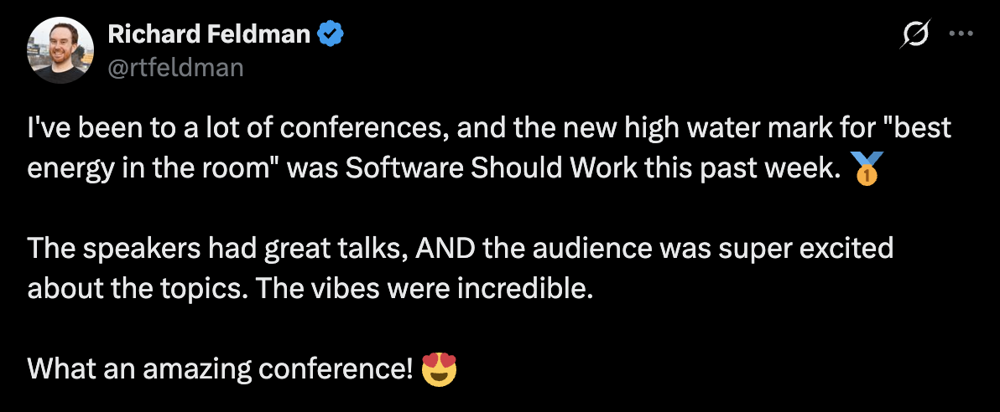
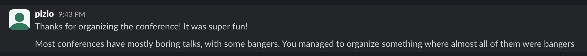

Nondeterminism's not the problem
Software Should Work Worked
Not only did Software Should Work work, it went better than I could have ever possibly imagined.
During most conference talks there's a large contingent of attendees who opt to skip the session and chat instead. Talking with other attendees is a great use of time at a conference, but as the organizer I was naturally a bit worried about this: what if half of the attendees skip the talks and the energy isn't there? Much to my surprise, almost everyone watched every talk! Further, I'm used to looking around during conference talks and seeing many attendees buried in their laptops or phones, daydreaming, or just ready for the talk to be over. Not so at SSW. Every time I turned around to look at the crowd I was pleasantly surprised; everyone was paying attention!

Having such a present, engaged audience led to a wonderful feeling of cohesion. The speakers kept referencing each other's talks in their own. You could talk to any attendee about any of the talks and know they were there for it. I have never heard so many successful jokes at a conference. I knew some of the speakers would be funny, but I really didn't expect that they all would! This only happened because the audience was so engaged.

The vibes were just right. We could agree that software is often broken and that we have the power to make it excellent. Sometimes discussions around quality devolve into despair around the sorry state of the status quo; not so at SSW. There was excellent positive energy towards actually builing better software.
Two days after the conference, Andrew Kelley opened an issue on the Zig repo to add support for a Fil-C inspired compilation mode. Andrew was right there in the audience during Fil's (incredible) talk on Fil-C. It's easy to think abstractly that organizing a conference will "promote innovation" or something, but wow; to think that SSW might play a tiny role such an epic feature being added to a major programming language?!

A core reason that the event worked is that we had such high-quality attendees. You couldn't walk three steps without bumping into someone working on something interesting who might as well have been a speaker. It seemed like everyone there completely got the premise of the conference: "Yeah, software should work!".

Throughout the organizing process, many people asked me "Why are you hosting this event in Columbia, Missouri?!". The simple answer is that I live here. However, this choice of location turned out to be a feature, not a bug. Because Columbia isn't a major hub, it acted as a natural filter: the people who showed up were the ones that really wanted to be there.
Fortunately Columbia is also an excellent setting for a conference. You can't go wrong with so many great restaurants, coffee shops, and bars within a short walk of the venue. Plus the trail system, plus Mizzou's campus, plus all the art, etc.

One attendee named Grigoris came all the way from Greece! He had some spare time before flying back, so he and my dad ended up going sailing.